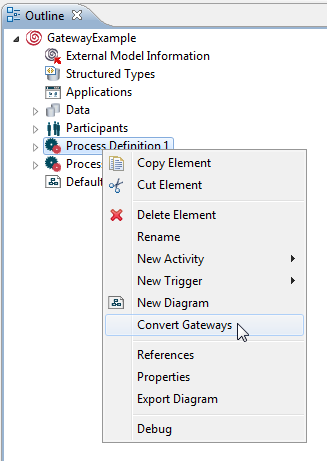
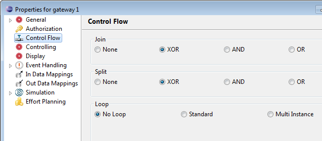
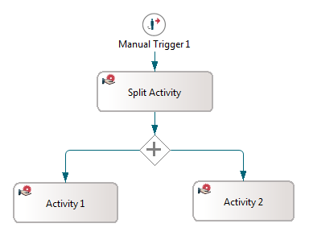
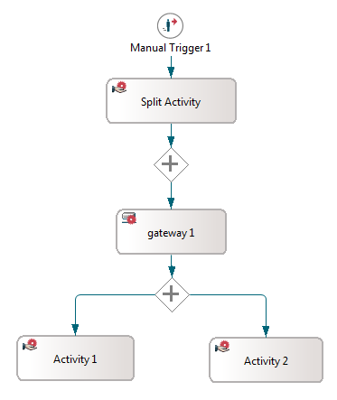
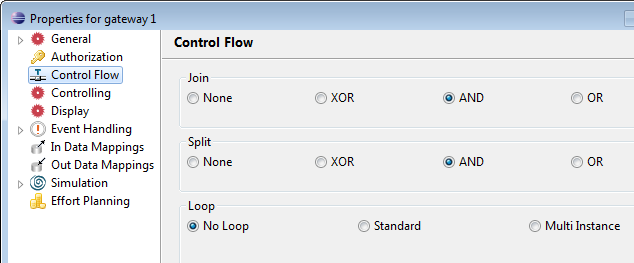
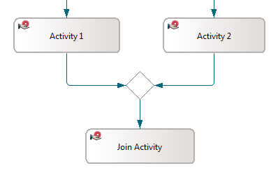
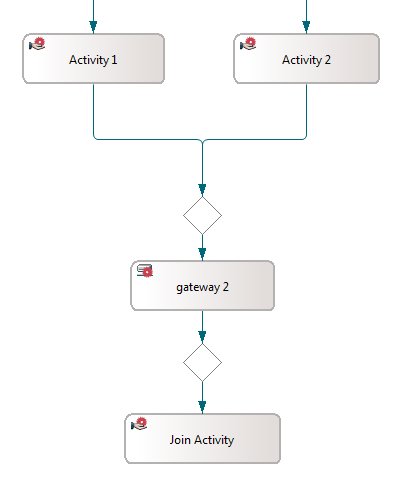
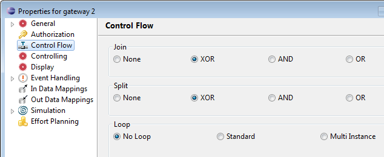
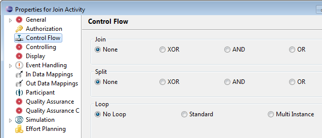
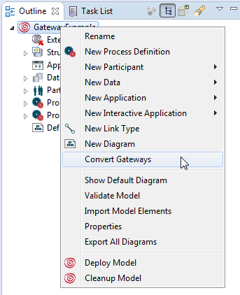

Unlike as in the Eclipse modeler, gateways are handled as first class elements in the Portal Modeling perspective. Details are described in chapter Working with Gateways of the Business Process Modeling Handbook. To make models using gateways created in the Eclipse modeler compatible in the Portal Modeling perspective, you can convert them via the Convert Gateway option. This option is provided in the context menu for models and process definitions.
To convert gateways of a process definition, right-click the process definition in the Outline view and select Convert Gateways.

Figure: Convert Gateways of a Process Definition
A route activity is created as first class element to represent the gateway, which can be imported in the Portal Modeling perspective. The control flow in this route activity is set to the type of the split or join control flow of the activity the gateway is referring to.

Figure:
For activities, that have their Split Behavior set to other than NONE, a route activity with this Split Behavior (AND or XOR) as well as the same behavior type set for Join Behavior is created. The Split Behavior of the original activity is reset to NONE.
In the following example an activity Split Activity has its Split Behavior set to AND:

Figure: Activity with Split Behavior AND
After converting the gateways, a new route activity was created to represent the gateway.

Figure: Graph after conversion
In the property page of this route activity, you can see that the control flow is set to AND.

Figure: Control Flow of Gateway activity
The control flow of activity Split Activity was changed to NONE.
Figure: Control Flow of Split Activity
In this format, the converted model is now able to be imported into the Modeling perspective.
For activities, that have their Join Behavior set to other than NONE, a route activity with this Join Behavior (AND or XOR) as well as the same behavior type set for Split Behavior is created. The Join Behavior of the original activity is reset to NONE.
In the following example, an activity Join Activity has its Join Behavior set to XOR:

Figure: Activity with JOIN Behavior XOR
After converting the gateways, a new route activity was created to represent the gateway.

Figure: Graph after conversion
In the property page of this route activity, you can see that the control flow is set to XOR.

Figure: Control Flow of Gateway activity
The control flow of activity Join Activity was changed to NONE.

Figure: Control Flow of Join Activity
In this format, the converted model is now able to be imported into the Modeling perspective.
To convert gateways of all process definitions in a model, right-click the model in the Outline view and select Convert Gateways.

Figure: Convert all Gateways of a Model